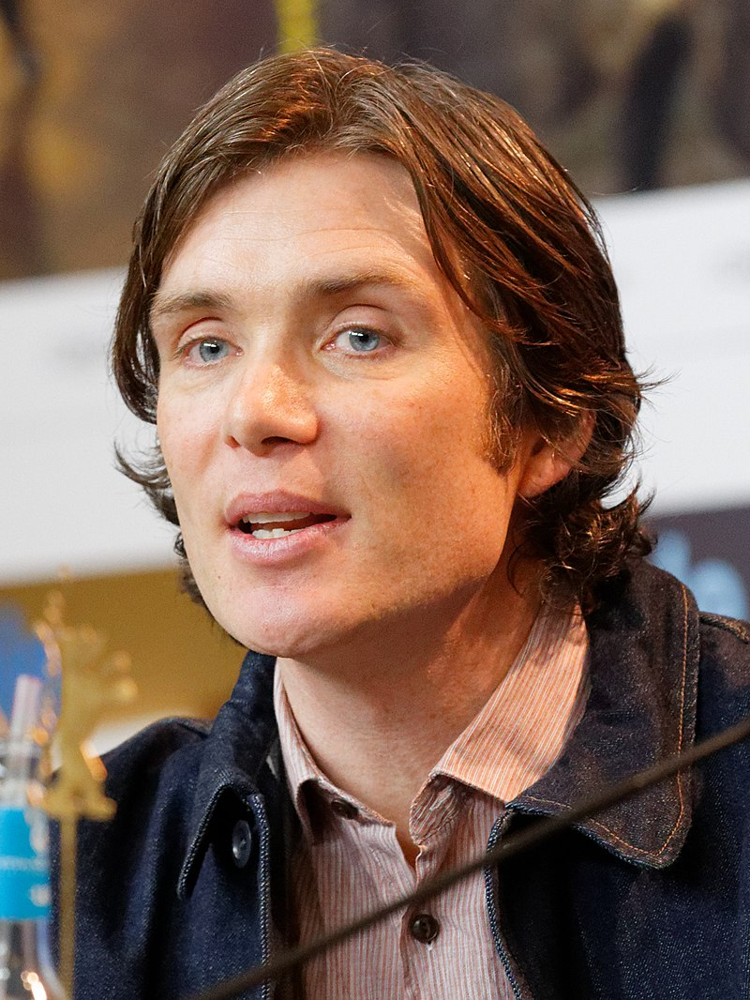
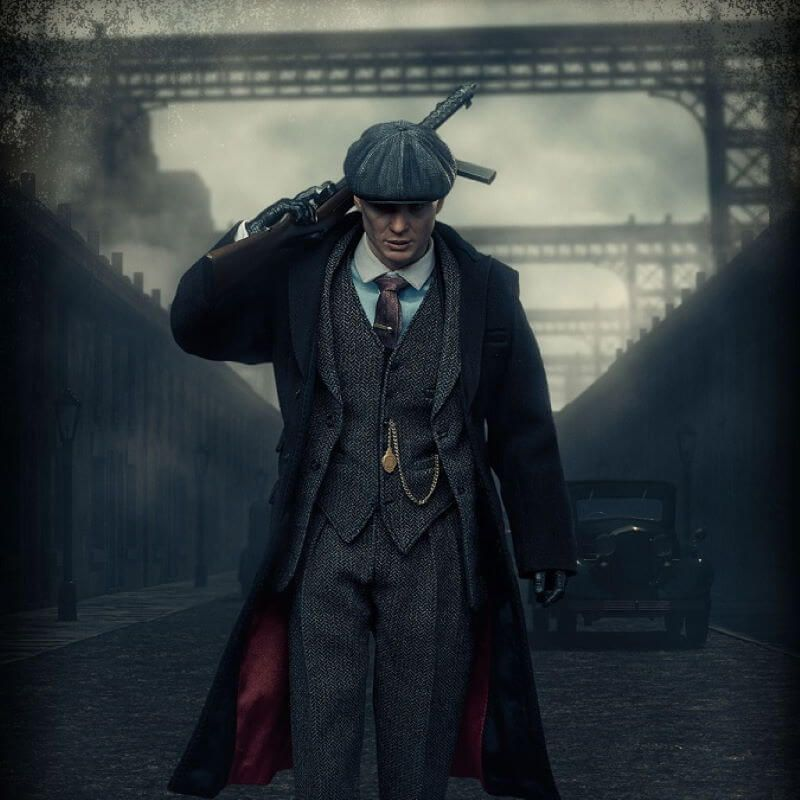
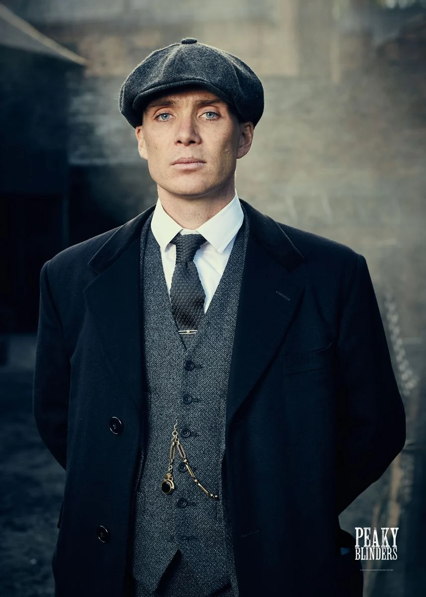

...Since 2013, he has starred as Tommy Shelby in the BBC crime drama series Peaky Blinders, for which he won the Irish Film and Television Award for Best Actor in 2017 and 2018.
cillian murphy
actor
Cillian Murphy (born 25 May 1976) is an Irish actor. He was the lead singer, guitarist, and lyricist of the rock band The Sons of Mr. Green Genes. He turned down a record deal in the late 1990s and began acting on stage and in short and independent films. His first notable film roles include Darren in the drama Disco Pigs (2001), Jim in the zombie horror 28 Days Later (2002), John in the dark comedy Intermission (2003), Jackson Rippner in the action thriller Red Eye (2005), and Patrick "Kitten" Braden in the comedy-drama Breakfast on Pluto (2005). For the last performance, he was nominated for a Golden Globe Award for Best Actor in a Musical or Comedy and won an Irish Film and Television Award for Best Actor Murphy is known for his collaborations with director Christopher Nolan, playing the Scarecrow in The Dark Knight Trilogy of superhero films (2005–2012) and appearing in the sci-fi action thriller Inception (2010), the war drama Dunkirk (2017), and in the upcoming biopic Oppenheimer (2023) as the titular physicist. Other films in which he has appeared include the war drama The Wind That Shakes the Barley (2006), the sci-fi thriller Sunshine (2007), the sci-fi action thriller In Time (2011), Jozef Gabčík in the war drama Anthropoid (2016), and Emmett in the horror A Quiet Place Part II (2021). In 2011, Murphy won the Irish Times Theatre Award for Best Actor and Drama Desk Award for Outstanding Solo Performance for the one-man play Misterman. In 2020, he was ranked No. 12 on The Irish Times' list of greatest Irish film actors.[1] He is married to Irish visual artist Yvonne McGuinness, with whom he has two sons; they reside in Dublin.

peaky blinders
TV series . 2013-2022 . TV-MA . 1h
IMDb RATING
creator steven knight
stars cillian murphy . helen mccrory
A gangster family epic set in 1900s England, centering on a gang who sew razor blades in
the peaks of their caps, and their fierce boss Tommy Shelby.

thomas shelby
thomas shelby
Thomas Michael ‘Tommy’ Shelby OBE DCM MM MP is the son of Arth ur and Mrs. Shelby, brother of Arthur, John, Ada and Finn Shelby, father of Charles and Ruby Shelby, as well as being the husband of Grace and Lizzie Shelby. He is the leader of the Birmingham criminal gang, the Peaky Blinders and the patriarch of the Shelby Family.
Thomas served in World War I with the rank of Sergeant Major and was decorated for bravery (Though he dumped them in a canal after returning from the war). His experiences in World War I left him disillusioned and beset with ongoing nightmares, and he becomes determined to move his family up in the world so that the powers who had always mistreated them could no longer touch them.
After the vendetta with the New York Mafia, and during the year of the Wall Street Crash, Thomas Shelby became a Member of Parliament as a member of the Labour Party, while lending the chair of the legal business to his older brother, Arthur Shelby.